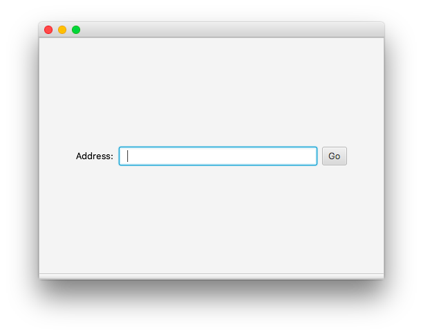
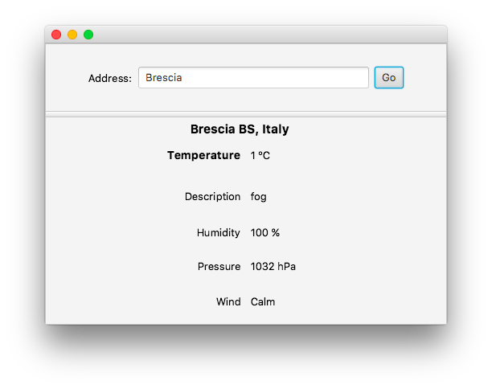
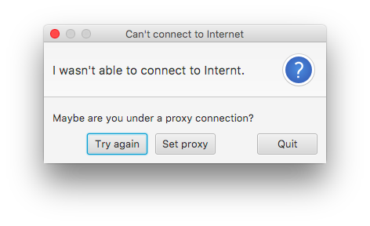
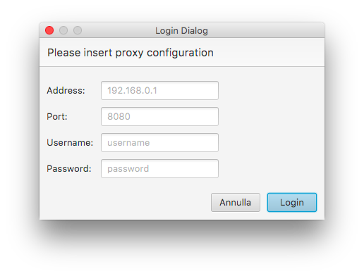

Welcome to DeluWeather website.
DeluWeather is a free software that retrives weather informations of a given address. It's easy and free to use! Download the executable or fork the project on GitHub
Installation
Install DeluWeather is very simple, you just have to install java and download the jar.zipem. Once you've downloaded it, extract the zip and double click on the jar file to open the application.
If you're computer that doesn't recognize the jar, open terminal, move to the directory where you downloaded it and type 'java -jar DeluWeather.jar'.
Configuration
DeluWeather should recognize automatically the environment. If configuration files are missing (Proxy configuration and Weather configuration) the software will ask user (with a prompt) to insert the data it needs.
Screenshots
Here are some screenshot of the software:
   More informations?
If you want to see more and detailed informations about the software, click here to go to the DeluWeather Official Wiki